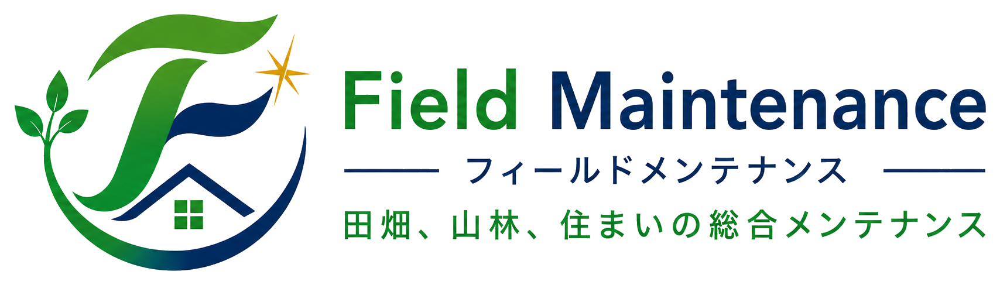

草刈り・除草
庭・農地・畑・空き地の草刈りに対応。定期契約もご相談いただけます。

大分県 豊後大野市・竹田市 対応
Field Maintenance（フィールドメンテナンス）は、草刈り・剪定・伐採・庭のお手入れ・大工工事やリフォームなど、 住まいと土地の「ちょっと困った」を受ける地域密着型サービスです。
For Family Property Care
「親が高齢になって草刈りが難しくなった」「帰省のたびに庭や畑が気になる」 そんな時に、現地で確認しながら必要な作業をご提案します。
個人のお宅、農地、畑、空き家まわりまで対応。写真を送っていただく簡単な相談から始められます。
Services
庭・農地・畑・空き地の草刈りに対応。定期契約もご相談いただけます。
庭木・生垣の剪定、大きな木の伐採・抜根まで状況に合わせて対応します。
草取り・整地・砂利敷きなど、庭まわりの作業をまとめてご相談いただけます。
現役大工の経験を活かし、フェンス・ブロック・デッキ・建具などの補修や修繕を承ります。
定期的な草刈りや見回りなど、空き家・農地の管理サービスに対応します。
現地確認のうえ、作業内容とお見積もりを無料でご案内します。
Why Choose Us
地域の土地柄や暮らし方に合わせて、必要な作業を現実的にご提案します。
現役大工としての経験を活かし、土地管理と住まいまわりの修繕を一度に相談できます。
料金が決まりづらい作業も、まずは状況を確認してから見積もりします。
Flow
場所、作業内容、写真があれば送ってください。
必要に応じて現地を確認し、作業範囲を整理します。
作業内容と金額をご案内します。料金は現在調整中です。
日程を決めて作業し、完了後の状態をご報告します。
FAQ
作業場所の広さ、草木の状態、搬出の有無などで変わるため、まずは無料でお見積もりします。
豊後大野市と竹田市に対応しています。周辺地域は内容によりご相談ください。
はい。公式LINEで場所や写真を送っていただき、状況を確認しながら進めます。
Contact
公式LINEは現在準備中です。公開時は下のボタンをLINEリンクに差し替えて、 写真を送って相談できる導線にします。
公式LINE 準備中対応エリア：豊後大野市・竹田市 / 料金：現地確認後にお見積もり